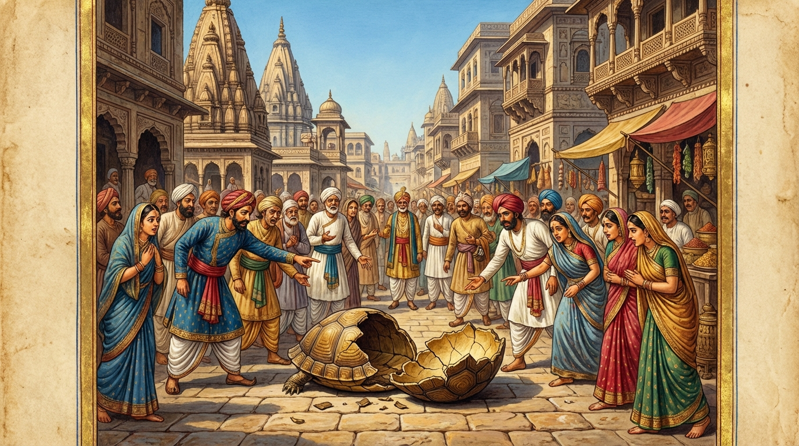

5. කච්ඡප ජාතකය (215)
“අවධී වත අත්තානං” (ඒකාන්තයෙන්ම තමා නැසීය) යන මේ දේශනාව බුදුරජාණන් වහන්සේ ජේතවනාරාමයෙහි වැඩවාසය කරන සමයෙහි කෝකාලික භික්ෂුව අරබයා වදාළ සේක. මෙහි විස්තර කථාව මහාතක්කාරි ජාතකයෙහි (ජාතක අංක 481) මතු සඳහන් වන්නේය. එකල්හි බුදුරජාණන් වහන්සේ, “මහණෙනි, කෝකාලික තෙම කට නිසා නැසුනේ දැන් පමණක් නොවේ, පෙරත් ඔහු කට නිසාම නැසුනේය” යැයි වදාරා අතීත කථාව ගෙනහැර දැක්වූ සේක.
යටගිය දවස බරණැස් නුවර බ්රහ්මදත්ත රජු රාජ්යය කරන සමයෙහි බෝසතාණන් වහන්සේ ඇමති කුලයෙහි ඉපදී වැඩිවියට පත්ව, රජුට අර්ථයෙන් හා ධර්මයෙන් අනුශාසනා කරන්නා වූ සේක. ඒ රජතුමා අධික ලෙස කථා කරන්නෙක් (බහුභාණී) විය. ඔහු කථා කරන කල්හි අන් අයගේ වචනයට අවකාශයක් නම් නැත. බෝසතාණන් වහන්සේ රජතුමාගේ ඒ අධික කථා විලාසය අත් හරවන්නට යම් උපායක් සොයමින් හැසිරෙති. ඒ කාලයෙහි හිමාල ප්රදේශයෙහි එක් විලක ඉබ්බෙක් වාසය කරයි. හංස පෝතකයෝ දෙදෙනෙක් ගොදුරු සොයා හැසිරෙමින් ඌ සමග විශ්වාසයක් ඇතිකර ගත්හ. ඔවුහු දැඩි විශ්වාසවන්තයෝ බවට පත්වී එක් දිනක් ඉබ්බාට මෙසේ කීවාහුය. “යහලු ඉබ්බාණෙනි! හිමාල වනයෙහි චිත්රකූට නම් පර්වත තලාවෙහි රන් ගුහාවෙහි අප වාසය කරන ස්ථානය සිත්කලු ප්රදේශයකි. අපිත් සමග එහි යන්නෙහිද?” “මම කෙසේ යන්නෙම්ද?” “ඉදින් නුඹ කට රැක ගන්නට (කට පියාගෙන ඉන්නට) හැකි වන්නෙහි නම්, කිසිවෙකුට කිසිවක් නොකියන්නෙහි නම්, අපි ඔබ රැගෙන යන්නෙමු.” “ස්වාමීනි, මම කට රැක ගන්නෙමි. මාව රැගෙන යවු” යැයි ඉබ්බා කීවේය. ඔවුන් දෙදෙනා “යහපතැයි” කියා එක් ලී කැබැල්ලක් ඉබ්බා ලවා කටින් අල්ලවාගෙන, තමන් (හංසයෝ) ඒ ලීයේ දෙකෙළවර ඩැහැගෙන අහසට ඉගිලුනාහ.
හංසයන් විසින් එසේ ගෙන යනු ලබන ඉබ්බා දුටු ගම්දරුවෝ, “හංසයෝ දෙදෙනෙක් ඉබ්බෙකු කෝටුවකින් ගෙන යන්නෝ යැ”යි කීවාහුය. ඉබ්බා, “දුෂ්ට ගැමි දරුවනි! යහලුවෝ මා රැගෙන යති. නුඹලාට මෙහි ඇති කාරණය කුමක්දැ”යි කියනු කැමැත්තේ, හංසයන්ගේ දැඩි වේගය නිසා බරණැස් නුවර රජමාලිගාවේ ඉහළ ප්රදේශයට පැමිණි කල්හි, කෝටුව ඩැහැගෙන සිටි තැනින් කට අතහැරී මාළිගාවේ අහස් මිදුලට (විවෘත මිදුලට) වැටී දෙකඩ විය. “ඉබ්බෙක් අහසින් බිමට වැටී දෙකට බිඳුනේ යැ”යි නුවර පුරා එකම කෝලාහලයක් විය. රජතුමා බෝසතාණන් වහන්සේ කැටුව ඇමති පිරිස පිරිවරාගෙන ඒ ස්ථානයට ගොස් ඉබ්බා දැක බෝසතාණන්ගෙන්, “පණ්ඩිතයෙනි! කුමක් හෙයින් මේ ඉබ්බා වැටුනේ දැ”යි විමසීය. බෝසතාණන් වහන්සේ, “මම බොහෝ කලක සිට රජතුමාට අවවාදයක් දෙනු කැමතිව උපායක් සොයමින් හැසිරෙමි. මේ ඉබ්බා විසින් හංසයන් සමග විශ්වාසයක් ඇති කරගන්නට ඇත. ඔවුන් විසින් ‘අපි ඔබ හිමාලයට ගෙන යන්නෙමු’යි කෝටුවක් කටින් අල්ලවාගෙන අහසින් ගෙන යන ලද්දේ විය යුතුය. ඉක්බිති ඉබ්බා කිසිවෙකුගේ වචනයක් අසා, කට රැක ගන්නට නොහැකිව කිසිවක් කියනු කැමතිව කෝටුව කටින් මුදන්නට ඇත. මෙසේ අහසින් වැටී මරණයට පත් වන්නට ඇතැ”යි සිතා, “එසේය මහරජ! දොඩමලු පුද්ගලයෝ කෙළවරක් නැතිව වචන කීමෙන් මෙවැනි දුකකට පැමිණෙත් යැ”යි කියා මෙම ගාථාවන් වදාළ සේක:

“අවධී වත අත්තානං, කච්ඡපො ව්යාහරං ගිරං;
සුග්ගහීතස්මිං කට්ඨස්මිං, වාචාය සකියාවධි.”
(ඒකාන්තයෙන්ම
ඉබ්බා කථා කරන්නට ගොස් තමා විසින්ම තමා නසා ගත්තේය. මුවින් මනාකොට ඩැහැගත් දඬුකඩ ඇති කල්හි, තමාගේ වචනයෙන්ම
තෙමේම තමා නසා ගත්තේය.)
“එතම්පි දිස්වා නරවිරියසෙට්ඨ, වාචං පමුඤ්චෙ කුසලං නාතිවෙලං;
පස්සසි බහුභාණෙන, කච්ඡපං ව්යසනං
ගත”න්ති.
(මිනිසුන් අතර වීර්යයෙන් ශ්රේෂ්ඨ වූ මහරජ, මේ කාරණාව දැක නුවණැත්තා සත්ය වචනයෙන් යුත් කුසල වූ
වචනම, කාලයට උචිත පරිදි පමණ දැන කියන්නේය. බොහෝ කොට කථා කිරීමෙන් කට රැකගන්නට නොහැකිව විනාශයට පත් ඉබ්බා දෙස
බලනු මැනවි.)
යනාදී වශයෙන් මෙම ගාථාවන් වදාළ සේක.
එහි අර්ථය මෙසේය: අවධී වත යනු ඒකාන්තයෙන්ම ඝාතනය කෙළේය යන්නයි. ව්යාහරං යනු කථා කරන්නේ, සුග්ගහීතස්මිං කට්ඨස්මිං යනු කටින් මනාකොට ඩැහැගත් දඬුකඩ ඇති කල්හි, වාචාය සකියා වධී යනු දොඩමලුකම නිසා නොකල්හි වචන පිට කරමින් ඩැහැගත් තැන අතහැර තමන්ගේ ඒ වචනය නිසා තමන්ම වධයට පත්විය හෙවත් ඝාතනය විය යන්නයි. මෙසේ මොහු මරණයට පැමිණියේ වෙනත් හේතුවක් නිසා නොවේ. එතම්පි දිස්වා යනු මේ කරුණද දැක, නරවීරිය සෙට්ඨා යනු මිනිසුන් කෙරෙහි වීර්යයෙන් ශ්රේෂ්ඨ වූ උතුම් රජතුමනි! වාචං පමුඤ්චෙ කුසලං නාතිවෙලං යනු සත්යය ආදී කරුණුවලින් යුක්ත වූ නිවැරදි දේම පණ්ඩිත පුරුෂයා මුදාහරින්නේය, කියන්නේය. එයද ප්රයෝජනවත් විය යුතුය, කාලයට සුදුසු විය යුතුය. බොහෝ කාලයක් කතා නොකළ යුතුය (සීමාව ඉක්මවා නොකියයි). කාලය ගෙවී ගිය විට සීමාවක් නැති වචන නොකියන්නේය. පස්සසි යනු ප්රත්යක්ෂ වශයෙන් හෙවත් තම දෑසින්ම ඒකාන්තයෙන් දකින්නෙහිය. බහුභාණෙන යනු බොහෝ කොට කථා කිරීමෙනි. කච්ඡපං ව්යසනං ගතං යනු ජීවිතක්ෂයට හෙවත් මරණයට පත් මේ ඉබ්බා දෙස බලන්න.
රජතුමා, “මේ මා අරබයා කියන්නේ යැ”යි දැන, “පණ්ඩිතයෙනි! මා සඳහන් කොට කියන්නෙහිදැ?”යි විමසීය. බෝසතාණෝ, “මහරජතුමනි! නුඹ වහන්සේ හෝ වේවා, වෙන අයෙකු හෝ වේවා, පමණ ඉක්මවා කථා කරන්නේ නම් මෙබඳු විපතකට පැමිණේ යැ”යි ප්රකට කොට කීහ. රජතුමා එතැන් පටන් අධික ලෙස කථා කිරීමෙන් වැළකී මඳක් කථා කරන්නෙක් (මන්දභාණී) විය.
බුදුරජාණන් වහන්සේ මේ ධර්ම දේශනාව ගෙනහැර දක්වා ජාතක කථාව නිමවා වදාළ සේක. “එකල ඉබ්බා වූයේ මේ කෝකාලික භික්ෂුවය. හංස පෝතකයෝ දෙදෙනා වූයේ අග්ර ශ්රාවකයෝය (සැරියුත් මුගලන් දෙනම). රජතුමා වූයේ ආනන්ද ස්ථවිරයන්ය. පණ්ඩිත ඇමතියා වනාහි ලොව්තුරා බුදු වූ මම ම වෙමි” යි වදාළ සේක.
පස්වන වූ කච්ඡප ජාතක වර්ණනාව නිමි.